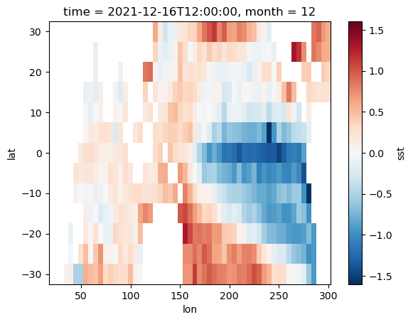
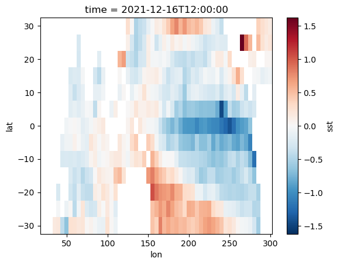

Get Anomaly Data¶
get_anom¶
Get climate data anomaly
Parameter:¶
DaArray (xr.DataArray): shape = (time, *number) original Dataarray
method (int, optional): method of getting anomaly.
0 is Minus the multi-year average of the corresponding month
1 is Remove the linear trend of the corresponding month
Defaults to 0.
Returns: anom (xr.DataArray): climate data anomaly
Example¶
Load Module and Date¶
[1]:
import sacpy as scp
sst = scp.load_sst()['sst']
ssta0 = scp.get_anom(sst,method=0)
ssta1 = scp.get_anom(sst,method=1)
plot and see difference between different methods¶
[2]:
ssta0[-1].plot()
[2]:
<matplotlib.collections.QuadMesh at 0x158da92e0>

[3]:
ssta1[-1].plot()
[3]:
<matplotlib.collections.QuadMesh at 0x1595244c0>

Reason¶
Removing the linear trend has a great impact on the Indian Ocean, because the warming trend of the Indian Ocean is more obvious